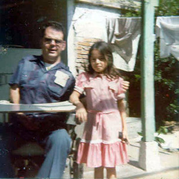

As should be well known by now, my chosen career was that of a school teacher, mostly in the field of mathematics. I have worked at a wide variety of levels, ranging from elementary students up to university courses. For the most part, however, I taught at the middle school and high school levels - grades 6 through 12. But math wasn't the only thing. I enjoyed several years of teaching English to non-native speakers, or ESL as it is called in the teaching world. That acronym stands for English as a Second Language. It was as a teacher of ESL that I came to Tapachula and met my Gloria.
I came by this profession naturally. My father was a school teacher, sports coach, principal, and superintendent for many years. My mother and two of my three step-mothers were teachers as well. You might say, teaching runs in my blood. I'd like think it runs through my very soul, but that may be going too far.
So it was therefore quite logical and natural for me to become involved in the education of Gloria's daughters. First, it was Areli. I began trying to give her simple classes in English and math during my free time around the institute, of which I had plenty. Our conversations were definitely good practice for my Spanish, not to mention good for father-daughter bonding activities. Rather soon, Anne suggested something that raised the bar considerably. Nearby the institute was a private colegio [school] that had children of many ages. Why not enroll Areli there?
It was called Instituto de Soconusco. The owner was a lady known as Stra. Lopez. When I talked with her one day, things seemed to be possible until it came to the matter of tuition. Gloria and I were not capable of managing that. So I offered this idea. What if I would come over once or twice a week to give English classes in exchange for the tuition? That was agreeable to her, and it was set.
 Terry and Areli in the laundry area
behind the instituteLater on, when Sonia came, the situation was different. Gloria had to whisk her out of San Salvador in a great hurry. She was not able to bring along any official papers, such as a birth certificate, let alone a passport. Areli did have them, so enrollment in a school was legal. But for Sonia, nothing of the sort was in our hands. However, I didn't need any red-tape forms to teach her. I simply bought a good book for learning English and we began our own daily educational activity. I even threw in some math at times. The important thing was that my soon-to-be daughters were getting educated, and that's what counts the most.
* *** * Little did I know that there was another surprise just around the corner. By now, Gloria had observed me taking a great interest in the well-being of the girls and the whole family as well. One morning while we were in the back of the institute, in the open-air laundry area, she said to me, "Terry, I have something I want to tell you. It's that I have another child, a son, older than Sonia. He's still down there in San Salvador."
She said these words perhaps half-way expecting this to harm our relationship. That I would turn away from her. After all, it was her belief that no man would be willing to accept a woman who already had so many children by a prior relationship. Such is the macho philosophy in the Latino culture. On the other hand, perhaps she was beginning to see a different sort of male figure in me, due to my accepting behavior so far, thus was willing to take a chance on confessing to me.
Either way, only she knows the feelings that flowed through her being when, without any hesitation, I replied, "Qué bueno! Tres es mi número favorito! " [How nice! Three is my favorite number!]
Foncho on his bicycle, in San Salvador Now, mind you. This was not just some platitude, meant to play up to this young woman, determined to look after her children, so that I could continue with our own romantic relationship.. It had a definite foundation in my own past history. My father's third wife - my second step-mother, Donna - accepted three boys (ages 14, 11, and 8) when she married him. I told Gloria, that if she could step up and take on the responsibility of raising three boys that were not biologically hers, surely I could do the same. As well might be imagined, these words brought a great relief to Gloria. She now could feel more tranquil about continuing with me. Her children would be accepted and loved by this American gringo. She now knew she had nothing to lose and everything to gain.
Many times since that fateful day, I said a little prayer, "God, thank you for Donna."
Comments?
Send e-mail.Back to
topGo back to
Contents
non prescription viagra canada generic viagra online online generic viagra generic viagra usa cheap generic viagra viagra without perscription canada order generic viagra usa order generic viagra online non prescription viagra usa canada order generic viagra online cheap generic viagra canada cheap generic viagra non prescription viagra online order viagra usa viagra online non prescription order generic viagra non prescription viagra online viagra without perscription canada order generic viagra canada order generic viagra order viagra usa order generic viagra online non prescription viagra online viagra without perscription canada